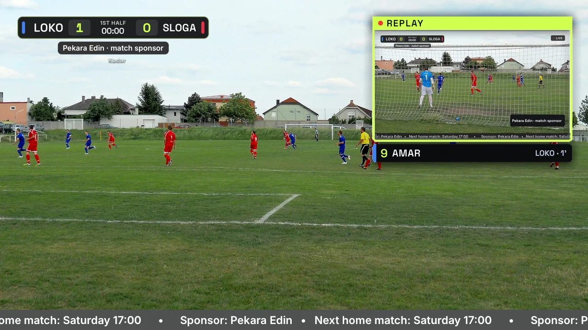
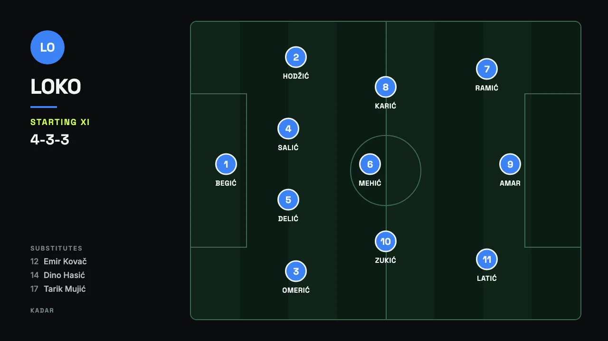

How to live stream a football match to YouTube with one phone
· Kadar

A club does not need a camera crew to show its matches. One phone on a tripod, a YouTube channel and a volunteer who taps the score are enough. This guide goes through the whole afternoon, from the channel settings to the final whistle.
1. Switch on live streaming on your YouTube channel, a day ahead
YouTube asks you to verify the channel with a phone number before it lets you go live, and the first activation can take up to 24 hours. Do this the day before the match, not at the pitch.
- Open YouTube Studio and choose Create, then Go live.
- Follow the verification steps if YouTube asks for them.
- When live streaming is active, open the Stream tab and copy the stream key. Treat the key like a password: whoever has it can stream to your channel.
2. Pick the place for the phone
Stand at the halfway line, as high as you can get: a stand, a clubhouse balcony, even the back of a pickup. Height matters more than zoom, because from above the players do not hide one another.
- Use a tripod. A hand-held phone for ninety minutes means a shaking picture and a tired arm.
- Turn the phone sideways. A match is wide, and so is every screen your viewers use.
- Keep the sun behind you if the kick-off time allows it.
3. Check the connection and the battery
A 720p stream uses roughly 1 to 2 GB of mobile data an hour, depending on the picture. Check your data plan, and test the signal at the exact spot where the tripod will stand: one end of a ground can have a much weaker signal than the other.
Streaming and filming drain a battery fast. Start with a full phone and plug in a power bank before the first half ends.
4. Put the scoreboard into the picture
A stream without the score makes every late viewer ask the same question in the chat. Kadar draws a scoreboard and a clock into the video itself, so they are in the stream and in the recording. You paste the YouTube stream key once, choose the two teams with their colours, and tap +1 when a goal goes in.
Streaming to YouTube or Facebook with the scoreboard is free in Kadar. If the connection drops, the app reconnects by itself and keeps recording to the phone in the meantime.

5. A short checklist for matchday
- Stream key pasted and tested the day before
- Tripod, power bank and charging cable
- Phone on Do Not Disturb, so a call does not interrupt the broadcast
- Team names, colours and line-ups entered before kick-off
- A link to the stream posted in the club's groups an hour ahead

After the final whistle
The recording stays on the phone with the scoreboard in it. Every goal you scored in the app is already a clip, and the result card is ready to post. That is the content your club's pages need on Sunday evening.